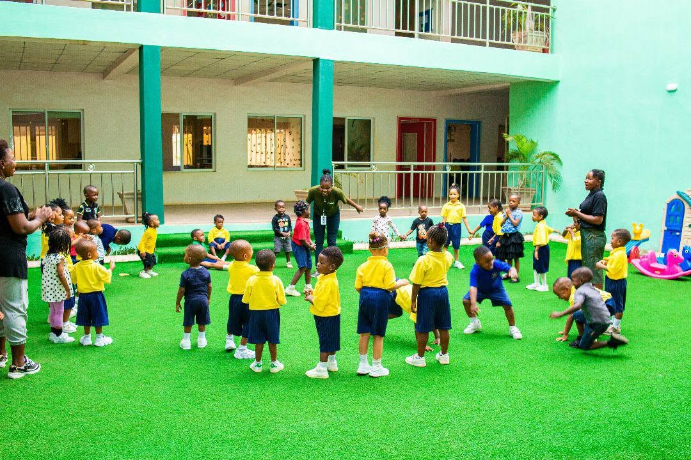
Early Years
Nursery 1 to 3 and Kindergarten/Creche
Bright, safe spaces where our youngest children learn through play and build confidence, language and friendships.
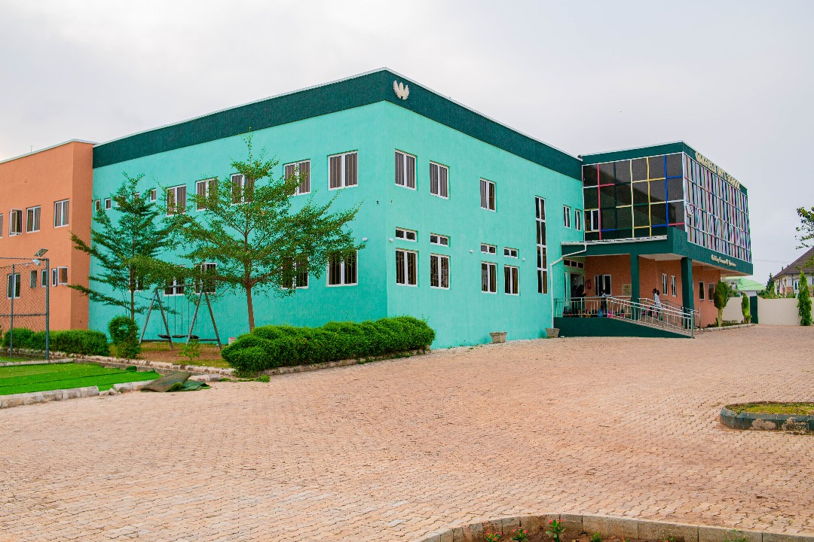
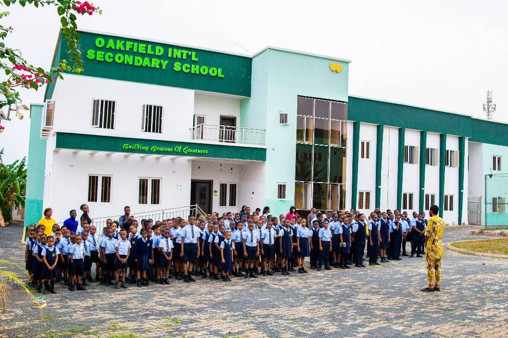

Nursery 1 to 3 and Kindergarten/Creche
Bright, safe spaces where our youngest children learn through play and build confidence, language and friendships.
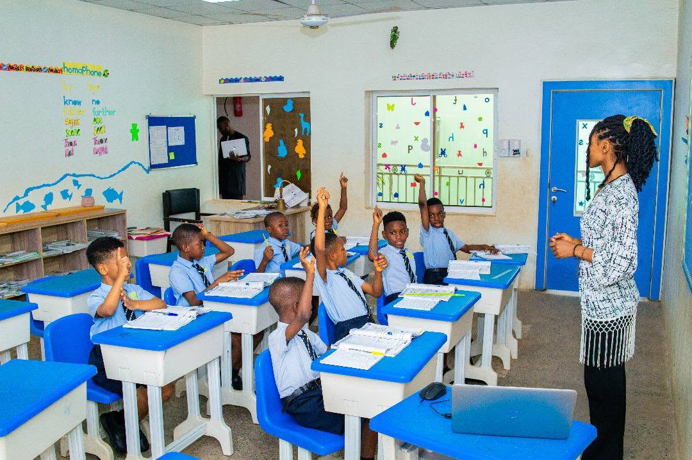
Primary 1 to 6
A strong foundation in reading, numeracy and curiosity, with music, chess and sport alongside the classroom.
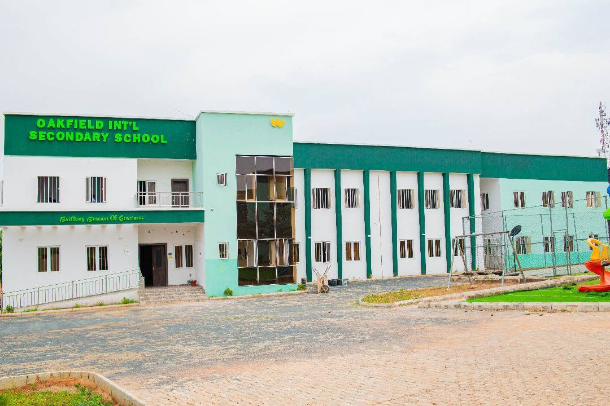
JS1 to SS3
Students are prepared for their examinations and for life, in a school that values character as much as grades.
Early Years, Primary and Secondary, with a courtyard and play area for our youngest children.
Music (strings, guitar, saxophone and drums), chess, table tennis, football and Scrabble.
A library and an ICT lab for our pupils.
School vans carry the Oakfield name. [SCHOOL TO SUPPLY] routes or areas served, if any
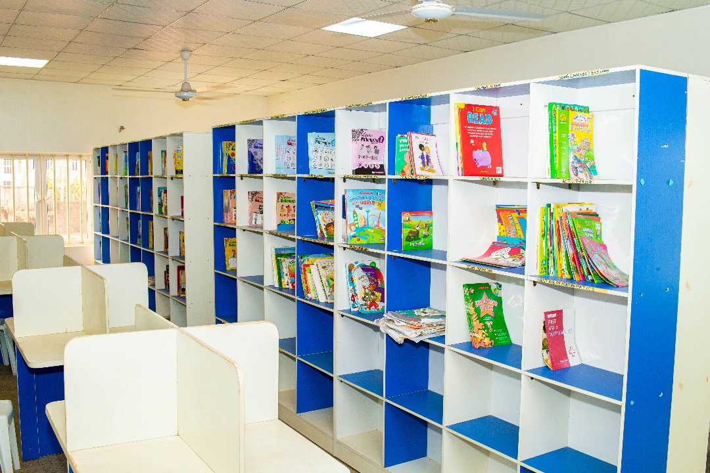
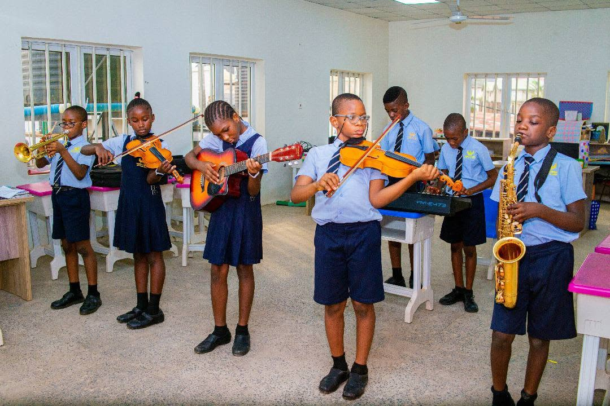
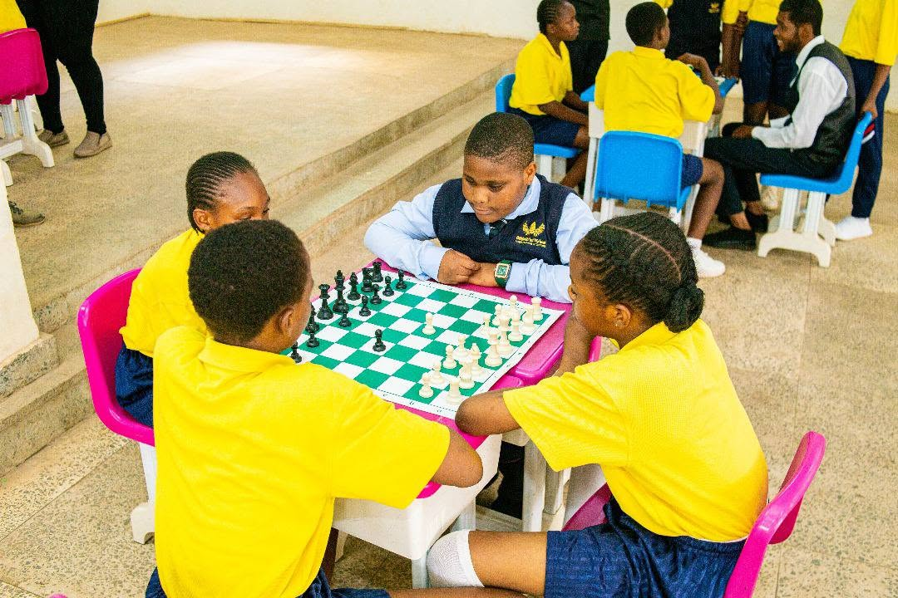
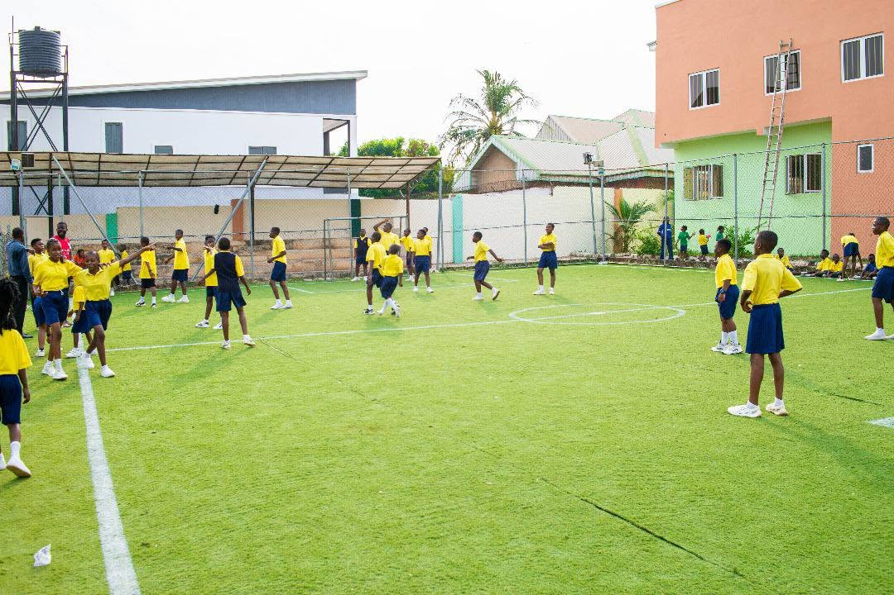
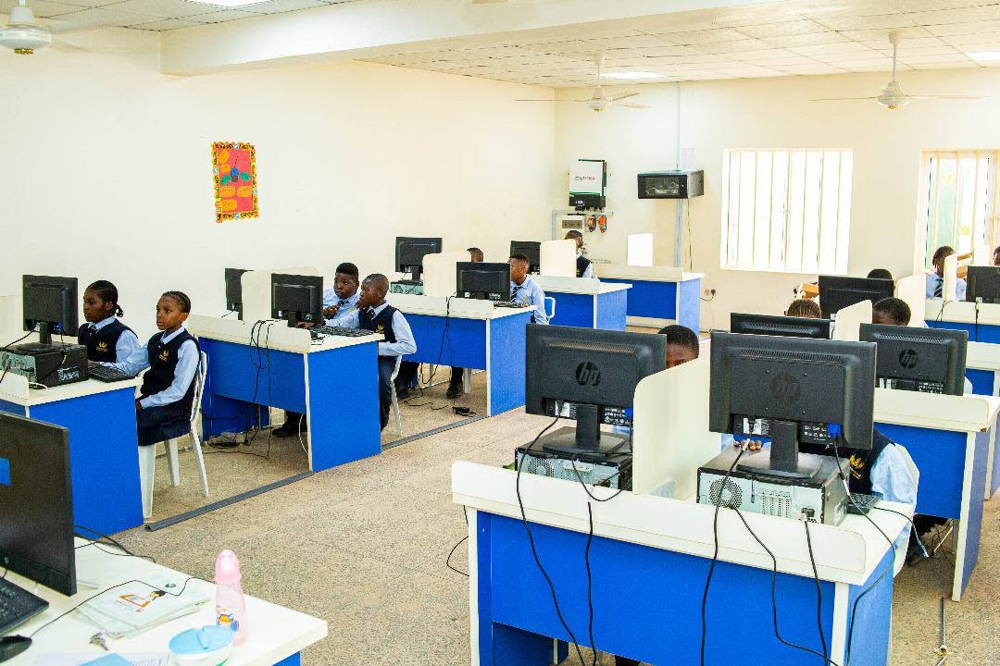
Applying takes a few minutes. Here is how it works.
[SCHOOL TO SUPPLY] key dates: intake opens, closes, entrance exam dates
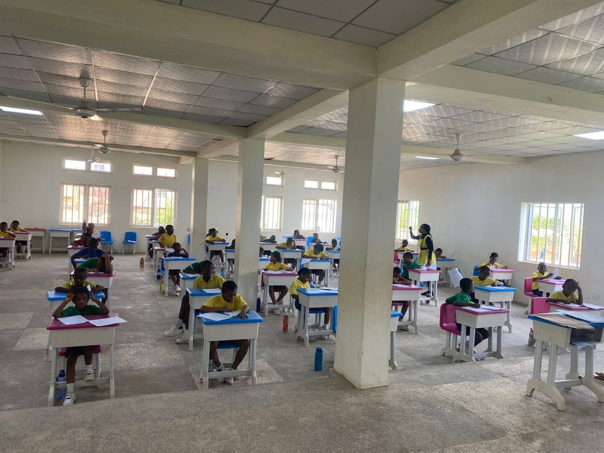
Complete the online application form, pay the application fee if one applies, and we will confirm by email. We will send the entrance exam date when it is set.
Where an application fee applies, the amount is shown on the application form before you pay. You pay securely online through Paystack.
Please do not pay again. Confirmation can take a few minutes. Press “Check again” on your application page. You will also receive a confirmation email once it is complete.
At the school, under supervision. We do not offer the exam at home.
On exam day at the school. After the exam, the same details let you follow your child's progress through admission.
Children applying to Early Years are assessed in person at the school instead of taking an online exam. We will tell you the date.
From Early Years (Nursery 1 to 3 and Kindergarten/Creche), through Primary 1 to 6, to JS1 to SS3, subject to places being available.
F2/F3 Maluze Street, New GRA, Transekulu, Enugu, Nigeria.
F2/F3 Maluze Street, New GRA, Transekulu, Enugu, Nigeria
[SCHOOL TO SUPPLY] phone, email, WhatsApp, opening hours (use the school profile contact fields)